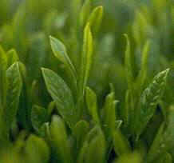
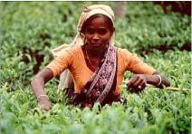
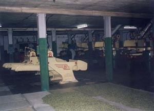

Čajovník
Botanika: Čajovník je stále zelená rostlina, čeledi čajovníkovitých (Theaceae), listy jsou světle až tmavě zelené, tuhé a mají pilovitý okraj. Květy, pro čaj bezvýznamné, jsou bílé až růžové. Plody představují malé tuhé tobolky, které se tvarem i barvou podobají evropským lískovým ořechům, jsou však spíše kulovité. Ve srovnání s kávou nebo kakaem není čaj získáván z plodů, ale z listů. Čajovou rostlinu rozdělujeme na dva druhy. Čajovník čínský (Tea sinensis) dosahující výšky 3 – 4 metry a čajovník assamský (Thea assamica) dorůstající v divoké přírodě 15 až 20 metrů. Z botanického hlediska jsou oba čajovníky příbuzné s evropskou kamélií. Assamský čajovník na rozdíl od čínského má větší a jinak utvářené listy, méně kvete, má větší obsah taninu a pro svoji teplomilnost je vhodnější k pěstování v nížinách. S úspěchem již bylo provedeno křížení obou čajovníků a tyto rostliny již převažují na většině plantáží na celém Světě, výjimkou jsou japonské a čínské plantáže.
Čajovník se pěstuje v oblastech ležících mezi 43. stupňem severní a 30. stupňem jižní šířky. V tropech může růst i v oblastech nacházejících se 2400 metrů nad mořem. Samozřejmě, že se stoupající výškou výnosy čajovníku klesají, avšak jejich kvalita bývá mnohem lepší, než u nížinného čaje. Dříve se čajovník pěstoval ze semen, dnes se rozmnožuje převážně formou řízků. Větvičky se vysadí do záhonů, a až zakoření, jsou přesazeny do stínu pod velké čajovníky. Později jsou zastřihávány, aby rostly do šířky a vytvořily tak co největší sběrnou plochu. Sběr lístků může v dobrém případě začít po čtyřech až šesti letech. Pravidelným otrháváním je keřík donucen tvořit nové a nové lístky. Pro kvalitní výnos vyžaduje čajovník mnoho lidské práce, není to pouze otrhávání a sestřihávání, ale i okopávání, hnojení a ničení různých škůdců. Vyžaduje také mnoho srážek rovnoměrně rozdělených po celý rok. Takto vypěstovaná rostlina dává užitek zhruba dvacet pět let, přičemž se může dožít sta i více let.
Sklizeň čaje
Jednou z nejdůležitějších prací na plantážích je sběr čajových lístků. Na jakosti závisí kvalita hotového výrobku – čaje. Velice důležité je sklízet v době, kdy se mladé lístky začínají rozvíjet. Promeškáním této doby bychom neblaze ovlivnili kvalitu čaje. Přestože jeho produkce v posledních letech neustále stoupá, jsou lístky sbírány až na výjimky ( Japonsko a Rusko ) stále ručně (viz. obrázek). Česači musí být zruční a zkušení, prostí voňavek a jiného pachu. Samotný sběr je pak rozlišován buď na kvalitu, nebo kvantitu. Sbíráním na kvalitu se rozumí odlomení malého vrcholového ochmýřeného pupenu bílé barvy, tzv. fleše, a dvou až tří nejmladších lístků (viz. obrázek ). Kvalitní proto, že zrovna tyto části rostliny obsahují nejvíce účinných látek, aroma, kofeinu a barviva, více než starší lístky. Ty se sbírají při vyšší poptávce na trhu s čajem. Pak se otrhávají i starší lístky a při sběru kombajnem i kousky stonků. Většinou se čajový list sklízí čtyřikrát až pětkrát ročně, v Indii a na Ceylonu, kde nejsou tak častá údobí dešťů, se čaj sklízí 15 až 30krát do roka, což je zhruba každý osmý až šestnáctý den, podle růstu nových lístků. Sklizeň listů v jižní Indii, na Cejlonu a Jávě trvá v podstatě celý rok. První sběr je v březnu až v květnu, v Číně v dubnu a v Assamu koncem března až začátkem dubna. Tato sklizeň se u některých druhů čajů nazývá First Flush, je to hlavně Darjeeling a v poslední době i Assam. Čaj je chutí daleko jemnější než čaje sklízené v hlavním vegetačním období, což je dáno mladostí lístků. Druhá sklizeň od konce května do poloviny června patří k jakostně nejlepším. Poslední sklizeň pak probíhá hlavně v září.
Výroba čaje
Většina továren na zpracování čaje stojí uprostřed plantáží, aby cesta ke zpracování byla co nejkratší. Každá časová prodleva má totiž za následek zhoršení kvality.
Jakmile sběrači doručí čajové listy, jsou okamžitě zváženy a rozloženy v tenkých vrstvách na sušicí rámy, kde s pomocí velkých ventilátorů, které sem ženou horký vzduch, proběhne zavadání, aby se lístky zbavily vlhkosti. Tím ztratí zhruba 35 % vody. Pracovníci obsluhující stojany pečlivě sledují průběh zavadání, aby v pravou chvíli tento proces ukončili. Výjimkou je zelený čaj, který se bezprostředně po sběru spařuje vodní párou v otáčivém bubnu při teplotě 85 - 90 stupňů po dobu 1,5 minuty, čímž se zničí fermenty.
Zavadlé listy pak podstupují svinování, což je doba, kdy se rozhodne, jakou metodou se čaj zpracuje. Při tomto procesu jde hlavně o to, aby popraskaly stěny listu a uvolnila se tak buněčná šťáva. Způsoby tohoto zpracování jsou tři:
- Ortodoxní metoda - tak se vyrábí klasické a podle mne nejlepší čaje. Při tomto procesu je čaj dán na tzv. roller. Tvoří ho rotující kovový stůl, nad nímž je válcovitá jímka, která se otáčí do opačného směru než, stůl. Jímka se naplní zavadlými listy, které se vlivem opačného směru rotování samočinně svinou. Uvolní se tak buněčná šťáva, která smáčí celý povrch listu.
- CTC – Crushing, Tearing, Curling – rozemletí, trhání, svinování. Ve strojích, které mají válce osazeny trny, se lístky roztrhají na kousky, čímž se oddělí kousky stonků od listů, které jsou pak svinuty na rychlých rollerech.
- LTP - Lawrieho metoda - listy jsou rozkrájeny noži pohybujícími se proti sobě v zařízení, do něhož je zároveň vháněn studený vzduch. Touto metodou se připravují čaje typu Fannings.
Po svinování přichází fermentace, což je proces oxidace a kvašení uvolněné buněčné šťávy. Listy se uloží do fermentační místnosti na dlouhé dřevěné lísky zhruba do výšky 5 cm. Působením kyslíku o teplotě kolem 35 stupňů se část kyseliny tříslové změní v nerozpustnou sloučeninu. Uvolňují se také další látky, které jsou z velké části rozpustné jen v horké vodě a mají velký vliv na chuť čaje. Konec fermentace se určí podle barvy a vůně.
Následné sušení, pražení či uzení je další procedurou při výrobě čaje. Sušit se začíná bezprostředně po fermentaci a celá procedura trvá zhruba 20 minut. Čajové lísky se dávají na běžící pásy patrových sušiček vytápěných dřevem, do kterých se vhání vzduch ohřátý na 85 stupňů. Sušením se odpaří zbývající voda a buněčná šťáva, která naschne na lístky. Tím se čaj začíná zabarvovat do takové podoby, jak ho znáte Vy. Než se však dostane k Vašim rukám, putuje ze sušiček ke třídění, kde je sítován. Tím se rozdělí na čaje listové, zlomkové a určené k dalšímu zpracování. Tříděním se tedy čaj i vyčistí od prachu a jiných nečistot.
Hotový čaj se v továrnách balí do dřevěných beden, které jsou opatřeny dostatečnou ochranou proti vlhkosti a jiným vlivům. Každá bedna obsahuje 20 až 50 kg čaje.
Druhy čaje dle zpracování
Čaje podle tohoto měřítka rozdělujeme na několik základních druhů.
Zelené čaje - zelený čaj dává světle žlutý až zelený nálev nahořklé chuti. Farmakologické účinky jsou mnohem silnější než u ostatních čajů. Výroba zeleného čaje zdomácněla zejména v Číně a Japonsku. K zeleným čajům nutno ještě dodat, že je lze použít na další nálev, aniž by ztratily na kvalitě. Prokázané blahodárné účinky těchto nefermentovaných čajů na lidský organismus z nich učinily velice žádaný artikl.
Černé čaje - v Číně též nazývané červené (podle barvy nálevu). Tyto čaje putují ke zpracování přímo z plantáží. Lístky se nejprve nechávají zavadnout za současného vhánění vzduchu při předepsané teplotě a vlhkosti. Během vadnutí se z listů vypařuje voda, měknou, ztrácejí lesk, stávají se křehkými a šednou. Zároveň v nich probíhají chemické změny - rozkládá se část chlorofylu, rozpadají se bílkoviny, probíhá oxidace tříslovin a tvoří se čajové aroma. Zavadlé listy se pak svinují, přičemž praskají a uvolňuje se buněčná šťáva. Potom následuje fermentace, při vzniku éterických olejů se rodí vůně čaje, uvolňuje se tein z vazby na taninu a mění se barva lístků z šedé na tmavočervenou.
Oolongy - polozelené, polofermentované či jinak nazývané, se připravují podobně jako čaje zelené, pouze s tím rozdílem, že fermentace je "v půli" přerušena sušením. Bohatý obsah silic dodává tomuto čaji velmi silné povzbuzující účinky. Listy jsou hnědozelené až skoro černé barvy.
Bílé čaje - tyto čaje jsou specialitou provincie Fujian v Číně. Získávají se sušením nefermentovaných listových pupenů, které se vyznačují stříbřitým ochmýřením listů. Na trzích se vyskytují většinou ve směsích. Čisté bílé čaje jsou pro velmi malé množství, jež se sklízí, velice vzácné.
Ochucené čaje - vzhledem k tomu, že čaj má velice silné absorpční schopnosti, přijímá část aromatu květů nebo vonné silice velice snadno. Děje se to ve zvláštních místnostech, kde se květy rozprostřou na lískách a nechají se tu spolu s čajem několik dní. Pro efekt se pak k čaji přidává nepatrné množství použitých květů.
Čajová směs - téměř každá balírna čaje se snaží balit různé směsi čajů, jak z důvodů výsledné chutě, tak z důvodů ekonomických.